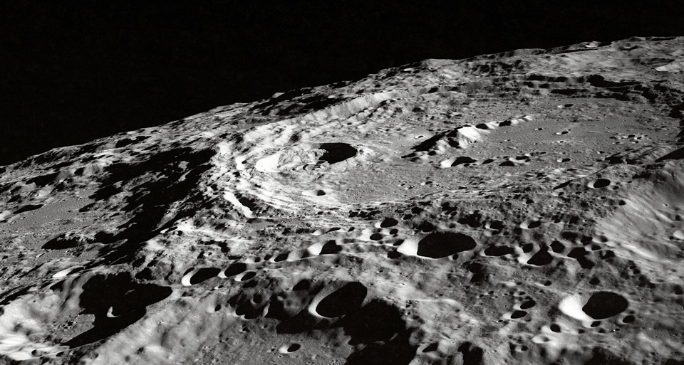

Crazy Facts About the Moon

Image from Unsplash, credit NASA. Rotated and
cropped.
- There is a 2.4 quadrillion ton "anomaly" made of metal, deep below the surface of the Moon. It's probably from an asteroid that collided with the Moon, but it could also be a huge, underground alien base!
- Eugene Cernan carved his daughter's initials on the surface of the moon. Since there's basically no erosion on the Moon, the initials will still be there many years from now.
- Monday is named after the Moon ("Moon's day"). It was originally the Anglo-Saxon word "mondandaeg".
- Due to tidal locking, one side of the Moon always faces the Earth. However, since the orbit is not circular, the Moon gradually rocks back and forth (called "libration"), allowing us to see about 59% of its surface from the Earth.
- The Moon was probably created when another planet collided with the Earth billions of years ago. Some of the material was blasted into orbit around the Earth, later accumulating into a single large body.
- The Moon is also known as "Luna" and is the origin of words like "lunacy". This is based on the myth that the Moon (particularly the full Moon) affects people's behavior.
- The Moon is about as wide as Australia.
- Illustrations often portray the Moon as being very close to Earth, but in
reality it's very far away. The actual scale is shown below. Image credit:
Nickshanks
(CC BY 2.5).